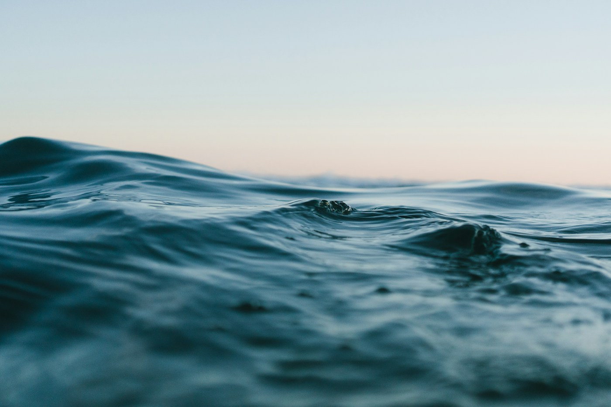
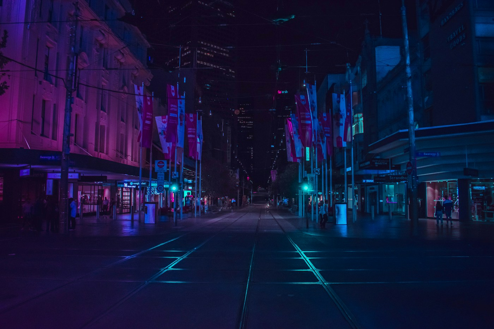

A PHOTOGRAPHIC JOURNALVOL. 01 — SELECTED MOMENTS



STILL✳& STORIES


A fleeting feeling.
Something worth keeping.
Photographs that feel
like a memory.
PORTRAITS · PLACES · PASSING MOMENTSAVAILABLE FOR COLLABORATIONS ●
01 / THE COLLECTIONAN EXPLORATION OF THE EVERYDAY
Selected stories.
A collection in motion. More stories to come. ↗
02 / THE PERSPECTIVEBEHIND THE FRAME
 THE ART OF PAYING ATTENTION.
THE ART OF PAYING ATTENTION.STILL / STORIESFor the things
For the things
you can’t quite
put into words.
A face in a crowd. The way light falls on an ordinary afternoon. A landscape that makes you pause.
This journal is a place for those moments. An ongoing conversation between people, places, and the quiet stories that connect them.